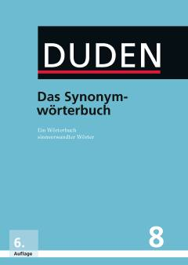

DBNemis tili sinonimlarining keng qamrovli va nufuzli izohli lug'ati.
Ushbu kitob nemis tilidagi so'zlarning sinonimlarini o'z ichiga olgan nufuzli lug'at bo'lib, Duden turkumining sakkizinchi jildi hisoblanadi. Unda so'zlarning ma'no nozikliklari, uslubiy xususiyatlari va qo'llanilish doiralari batafsil yoritilgan.